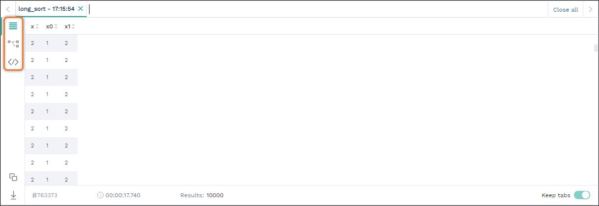
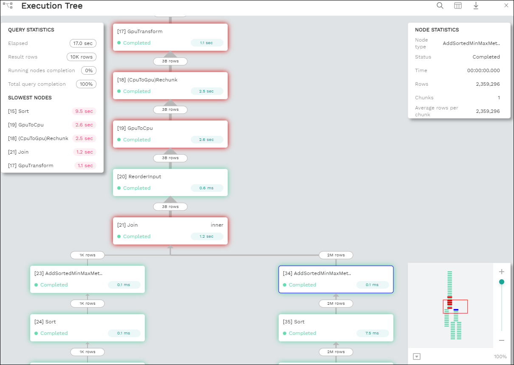
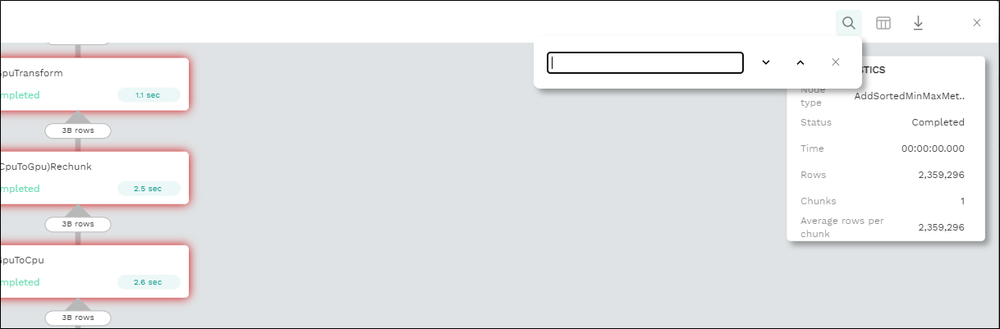
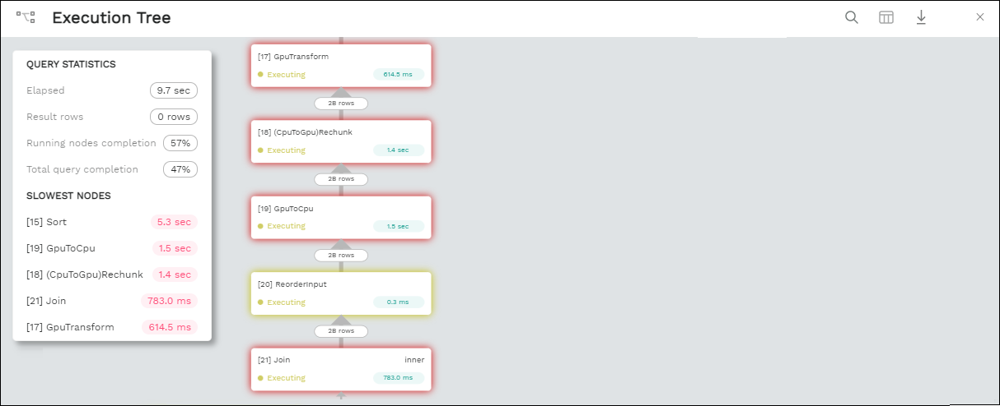

Executing Statements and Running Queries from the Editor
The Editor is used for the following:
Selecting an active database and executing queries.
Performing statement-related operations and showing metadata.
Executing pre-defined queries.
Writing queries and statements and viewing query results.
The following is a brief description of the Editor panels:
No. |
Element |
Description |
|---|---|---|
1 |
Used to select the active database you want to work on, limit the number of rows, save query, etc. |
|
2 |
Shows a hierarchy tree of databases, views, tables, and columns |
|
3 |
Used for writing queries and statements |
|
4 |
Shows query results and execution information. |
Executing Statements from the Toolbar
You can access the following from the Toolbar pane:
Database dropdown list - select a database that you want to run statements on.
Service dropdown list - select a service that you want to run statements on. The options in the service dropdown menu depend on the database you select from the Database dropdown list.
Execute - lets you set which statements to execute. The Execute button toggles between Execute and Stop, and can be used to stop an active statement before it completes:
Statements - executes the statement at the location of the cursor.
Selected - executes only the highlighted text. This mode should be used when executing subqueries or sections of large queries (as long as they are valid SQLs).
All - executes all statements in a selected tab.
Format SQL - Lets you reformat and reindent statements.
Download query - Lets you download query text to your computer.
Open query - Lets you upload query text from your computer.
Max Rows - By default, the Editor fetches only the first 10,000 rows. You can modify this number by selecting an option from the Max Rows dropdown list. Note that setting a higher number may slow down your browser if the result is very large. This number is limited to 100,000 results. To see a higher number, you can save the results in a file or a table using the CREATE TABLE AS command.
For more information on stopping active statements, see the STOP_STATEMENT command.
Back to Executing Statements and Running Queries from the Editor
Writing Statements and Queries from the Statement Panel
The multi-tabbed statement area is used for writing queries and statements, and is used in tandem with the toolbar. When writing and executing statements, you must first select a database from the Database dropdown menu in the toolbar. When you execute a statement, it passes through a series of statuses until completed. Knowing the status helps you with statement maintenance, and the statuses are shown in the Results panel.
The auto-complete feature assists you when writing statements by suggesting statement options.
The following table shows the statement statuses:
Status |
Description |
|---|---|
Pending |
The statement is pending. |
In queue |
The statement is waiting for execution. |
Initializing |
The statement has entered execution checks. |
Executing |
The statement is executing. |
Statement stopped |
The statement has been stopped. |
You can add and name new tabs for each statement that you need to execute, and Studio preserves your created tabs when you switch between databases. You can add new tabs by clicking , which creates a new tab to the right with a default name of SQL and an increasing number. This helps you keep track of your statements.
You can also rename the default tab name by double-clicking it and typing a new name and write multiple statements in tandem in the same tab by separating them with semicolons (;).If too many tabs to fit into the Statement Pane are open at the same time, the tab arrows are displayed. You can scroll through the tabs by clicking or , and close tabs by clicking . You can also close all tabs at once by clicking Close all located to the right of the tabs.
Tip
If this is your first time using SQream, see Getting Started.
Back to Executing Statements and Running Queries from the Editor
Viewing Statement and Query Results from the Results Panel
The results panel shows statement and query results. By default, only the first 10,000 results are returned, although you can modify this from the studio_editor_toolbar, as described above. By default, executing several statements together opens a separate results tab for each statement. Executing statements together executes them serially, and any failed statement cancels all subsequent executions.
The following is a brief description of the Results panel views highlighted in the figure above:
Element |
Description |
|---|---|
Lets you view search query results. |
|
Lets you analyze your query for troubleshooting and optimization purposes. |
|
Lets you see the SQL view. |
Back to Executing Statements and Running Queries from the Editor
Searching Query Results in the Results View
The Results view lets you view search query results.
From this view you can also do the following:
View the amount of time (in seconds) taken for a query to finish executing.
Switch and scroll between tabs.
Close all tabs at once.
Enable keeping tabs by selecting Keep tabs.
Sort column results.
Saving Results to the Clipboard
The Save results to clipboard function lets you save your results to the clipboard to paste into another text editor or into Excel for further analysis.
Saving Results to a Local File
The Save results to local file functions lets you save your search query results to a local file. Clicking Save results to local file downloads the contents of the Results panel to an Excel sheet. You can then use copy and paste this content into other editors as needed.
In the Results view you can also run parallel statements, as described in Running Parallel Statements below.
Running Parallel Statements
While Studio’s default functionality is to open a new tab for each executed statement, Studio supports running parallel statements in one statement tab. Running parallel statements requires using macros and is useful for advanced users.
The following shows the syntax for running parallel statements:
$ @@ parallel
$ $$
$ select 1;
$ select 2;
$ select 3;
$ $$
Back to Viewing Statement and Query Results from the Results Panel
Execution Details View
The Execution Details View section describes the following:
Overview
Clicking Execution Details View displays the Execution Tree, which is a chronological tree of processes that occurred to execute your queries. The purpose of the Execution Tree is to analyze all aspects of your query for troubleshooting and optimization purposes, such as resolving queries with an exceptionally long runtime.
Note
The Execution Details View button is enabled only when a query takes longer than five seconds.
From this screen you can scroll in, out, and around the execution tree with the mouse to analyze all aspects of your query. You can navigate around the execution tree by dragging or by using the mini-map in the bottom right corner.
You can also search for query data by pressing Ctrl+F or clicking the search icon in the search field in the top right corner and typing text.
Pressing Enter takes you directly to the next result matching your search criteria, and pressing Shift + Enter takes you directly to the previous result. You can also search next and previous results using the up and down arrows.
The nodes are color-coded based on the following:
Slow nodes - red
In progress nodes - yellow
Completed nodes - green
Pending nodes - white
Currently selected node - blue
Search result node - purple (in the mini-map)
The execution tree displays the same information as shown in the plain view in tree format.
The Execution Tree tracks each phase of your query in real time as a vertical tree of nodes. Each node refers to an operation that occurred on the GPU or CPU. When a phase is completed, the next branch begins to its right until the entire query is complete. Joins are displayed as two parallel branches merged together in a node called Join, as shown in the figure above. The nodes are connected by a line indicating the number of rows passed from one node to the next. The width of the line indicates the amount of rows on a logarithmic scale.
Each node displays a number displaying its node ID, its type, table name (if relevant), status, and runtime. The nodes are color-coded for easy identification. Green nodes indicate completed nodes, yellow indicates nodes in progress, and red indicates slowest nodes, typically joins, as shown below:
Viewing Query Statistics
The following statistical information is displayed in the top left corner, as shown in the figure above:
Query Statistics:
Elapsed - the total time taken for the query to complete.
Result rows - the amount of rows fetched.
Running nodes completion
Total query completion - the amount of the total execution tree that was executed (nodes marked green).
Slowest Nodes information is displayed in the top right corner in red text. Clicking the slowest node centers automatically on that node in the execution tree.
You can also view the following Node Statistics in the top right corner for each individual node by clicking a node:
Element |
Description |
|---|---|
Node type |
Shows the node type. |
Status |
Shows the execution status. |
Time |
The total time taken to execute. |
Rows |
Shows the number of produced rows passed to the next node. |
Chunks |
Shows number of produced chunks. |
Average rows per chunk |
Shows the number of average rows per chunk. |
Table (for ReadTable and joins only) |
Shows the table name. |
Write (for joins only) |
Shows the total date size written to the disk. |
Read (for ReadTable and joins only) |
Shows the total data size read from the disk. |
Note that you can scroll the Node Statistics table. You can also download the execution plan table in .csv format by clicking the download arrow in the upper-right corner.
Using the Plain View
You can use the Plain View instead of viewing the execution tree by clicking Plain View in the top right corner. The plain view displays the same information as shown in the execution tree in table format.
The plain view lets you view a query’s execution plan for monitoring purposes and highlights rows based on how long they ran relative to the entire query.
This can be seen in the timeSum column as follows:
Rows highlighted red - longest runtime
Rows highlighted orange - medium runtime
Rows highlighted yellow - shortest runtime
Back to Viewing Statement and Query Results from the Results Panel
Viewing Wrapped Strings in the SQL View
The SQL View panel allows you to more easily view certain queries, such as a long string that appears on one line. The SQL View makes it easier to see by wrapping it so that you can see the entire string at once. It also reformats and organizes query syntax entered in the Statement panel for more easily locating particular segments of your queries. The SQL View is identical to the Format SQL feature in the Toolbar, allowing you to retain your originally constructed query while viewing a more intuitively structured snapshot of it.
Back to Viewing Statement and Query Results from the Results Panel
Back to Executing Statements and Running Queries from the Editor